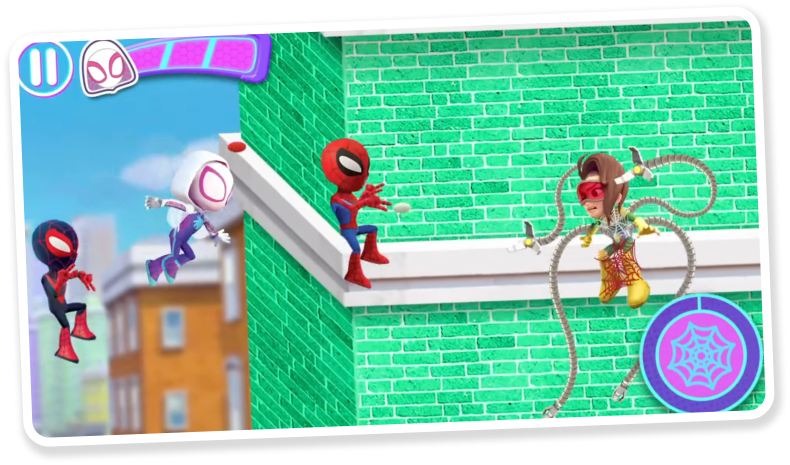

Spidey, nuestro lanzador de telarañas favorito se une a Ghost-Spider (Gwen Stacey) y Miles Morales para formar el equipo de Spidey, con la ayuda del cómico pero leal robot de Spidey, TRACE-E. Si Spidey se encuentra en una situación difícil donde necesita aún más poder de superhéroe, tengan la seguridad de que un amigo de los Vengadores correrá para ayudar.


Peter Parker, un joven huérfano neoyorquino que adquiere superpoderes después de ser mordido por una araña radiactiva, y cuya ideología como héroe se ve reflejada primordialmente en la expresión ”un gran poder conlleva una gran responsabilidad”.

Tras la muerte de Peter Parker, es quien toma la identidad de Spider-Man. La elección del presidente Barack Obama en enero de 2009, fue una fuente de inspiración para el cambio de etnicidad de Spider-Man.

El personaje es una variante de El Hombre Araña, una versión de universo alternativo de Gwen Stacy. Ella reside en la "Tierra-65", donde, en lugar de Peter Benjamin Parker, Gwen Stacy fue mordida por la Araña Radiactiva.


Tus padres, contentos. Explora el emocionante mundo de Spider-Man con más de 100 misiones que te mantendrán en constante acción y adrenalina. Enfréntate a desafíos únicos, desentraña misterios, y ayuda a Spider-Man a mantener la paz en la ciudad mientras te sumerges en la piel del héroe arácnido. ¿Tienes lo que se necesita para superar todas las misiones y convertirte en el auténtico Spider-Man?
Sumérgete en un universo de maravillas visuales con 'Spider-Man: [nombre del juego]'. Nuestro juego te llevará a través de escenas deslumbrantes que te dejarán sin aliento. Desde los rascacielos de Nueva York hasta los intrincados detalles de la vida de Peter Parker, cada rincón de este mundo te sorprenderá. Prepárate para una experiencia única que desafiará tus expectativas y te transportará a un asombroso viaje con el Hombre Araña.
Cada misión es una oportunidad para vivir la emocionante vida del Hombre Araña, y aunque los puntos que ganarás no tengan un propósito específico, la verdadera recompensa está en la diversión y la inmersión que experimentarás en cada desafío. No necesitas acumular puntos para sentirte como un auténtico superhéroe, ya que la adrenalina de salvar la ciudad y la emoción de las acrobacias en el aire son más que suficientes. ¡Así que prepárate para sumergirte en la acción y la aventura, sin preocuparte por los puntos, y vive la experiencia definitiva de Spider-Man!
la diversión está asegurada mientras te enfrentas a los infames villanos de la ciudad de Nueva York. Enfréntate a desafíos épicos, combate a tus enemigos más temibles y disfruta de una experiencia llena de acción y emoción. Cada encuentro con los villanos te sumergirá en una batalla trepidante y te llevará más cerca de convertirte en el auténtico Hombre Araña. Así que, ¿estás listo para derrotar a los villanos y sumergirte en la aventura definitiva de Spider-Man?"


Al inscribirse en nuestra lista de correo, nos autoriza a ponernos en contacto con usted para enviarle ofertas y actualizaciones de marketing por correo electrónico, y también acepta nuestra Política de privacidad y las Condiciones del servicio.

©SEGA. All rights reserved. SEGA is registered in the U.S. Patent and Trademark Office. SEGA, the SEGA logo and SONIC SUPERSTARS are either registered trademarks or trademarks of SEGA CORPORATION or its affiliates. All other trademarks, logos and copyrights are property of their respective owners.©2023 The LEGO Group. LEGO, the LEGO logo, the Minifigure, and the Brick and Knob configurations are trademarks and/or copyrights of the LEGO Group. All other marks and trademarks are the property of their respective owners. All rights reserved."PS", "PS5" and "PS4" are registered trademarks or trademarks of Sony Interactive Entertainment Inc.Microsoft, the Xbox Sphere mark, the Series X logo, Xbox One, and Xbox Series X are trademarks of the Microsoft group of companies.Nintendo Switch is a trademark of NintendoEPIC GAMES and the EPIC STORE LOGO are trademarks or registered trademarks of EPIC GAMES INC.©2023 Valve Corporation. Steam and the Steam logo are trademarks and/or registered trademarks of Valve Corporation in the U.S. and/or other countries.The ESRB rating icons are registered trademarks of the Entertainment Software Association.
COOKIE POLICY PRIVACY POLICY